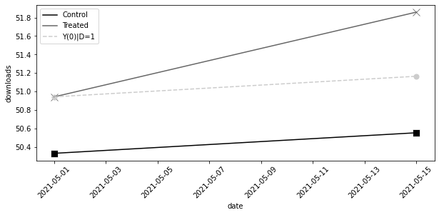
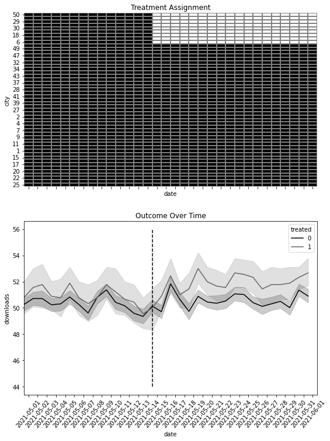
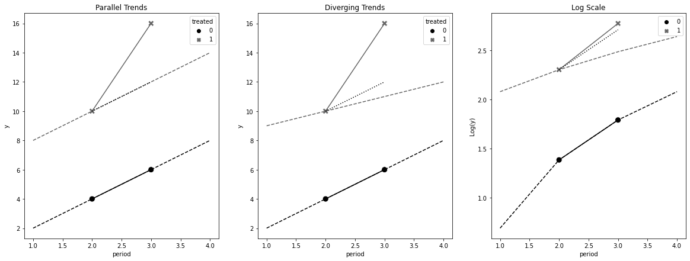
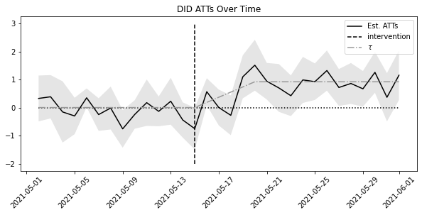
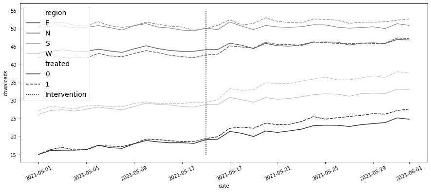
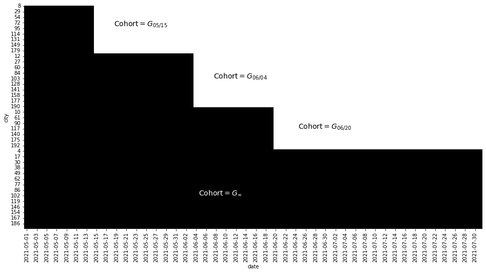
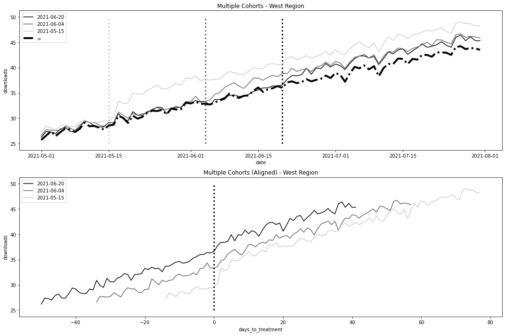
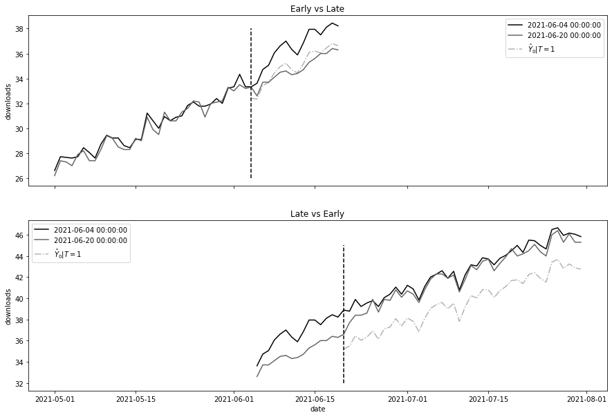
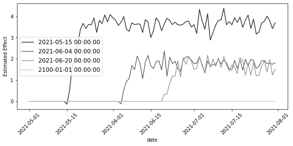

from toolz import *
import pandas as pd
import numpy as np
import statsmodels.formula.api as smf
import seaborn as sns
from matplotlib import pyplot as plt
from cycler import cycler
color = ["0.0", "0.4", "0.8"]
default_cycler = cycler(color=color)
linestyle = ["-", "--", ":", "-."]
marker = ["o", "v", "d", "p"]
plt.rc("axes", prop_cycle=default_cycler)11 8장 - 이중차분법
11.1 8.1 패널데이터
mkt_data = pd.read_csv("../data/short_offline_mkt_south.csv").astype(
{"date": "datetime64[ns]"}
)
mkt_data.head()| date | city | region | treated | tau | downloads | post | |
|---|---|---|---|---|---|---|---|
| 0 | 2021-05-01 | 5 | S | 0 | 0.0 | 51.0 | 0 |
| 1 | 2021-05-02 | 5 | S | 0 | 0.0 | 51.0 | 0 |
| 2 | 2021-05-03 | 5 | S | 0 | 0.0 | 51.0 | 0 |
| 3 | 2021-05-04 | 5 | S | 0 | 0.0 | 50.0 | 0 |
| 4 | 2021-05-05 | 5 | S | 0 | 0.0 | 49.0 | 0 |
(
mkt_data.assign(w=lambda d: d["treated"] * d["post"])
.groupby(["w"])
.agg({"date": [min, max]})
)| date | ||
|---|---|---|
| min | max | |
| w | ||
| 0 | 2021-05-01 | 2021-06-01 |
| 1 | 2021-05-15 | 2021-06-01 |
11.2 8.2 표준 이중차분법
did_data = mkt_data.groupby(["treated", "post"]).agg(
{"downloads": "mean", "date": "min"}
)
did_data| downloads | date | ||
|---|---|---|---|
| treated | post | ||
| 0 | 0 | 50.335034 | 2021-05-01 |
| 1 | 50.556878 | 2021-05-15 | |
| 1 | 0 | 50.944444 | 2021-05-01 |
| 1 | 51.858025 | 2021-05-15 |
y0_est = (
did_data.loc[1].loc[0, "downloads"] # treated baseline
# control evolution
+ did_data.loc[0].diff().loc[1, "downloads"]
)
att = did_data.loc[1].loc[1, "downloads"] - y0_est
att0.6917359536407233mkt_data.query("post==1").query("treated==1")["tau"].mean()0.766031640251845711.2.1 8.2.1 이중차분법과 결과 변화
pre = mkt_data.query("post==0").groupby("city")["downloads"].mean()
post = mkt_data.query("post==1").groupby("city")["downloads"].mean()
delta_y = (
(post - pre)
.rename("delta_y")
.to_frame()
# add the treatment dummy
.join(mkt_data.groupby("city")["treated"].max())
)
delta_y.tail()| delta_y | treated | |
|---|---|---|
| city | ||
| 192 | 0.555556 | 0 |
| 193 | 0.166667 | 0 |
| 195 | 0.420635 | 0 |
| 196 | 0.119048 | 0 |
| 197 | 1.595238 | 1 |
(
delta_y.query("treated==1")["delta_y"].mean()
- delta_y.query("treated==0")["delta_y"].mean()
)0.6917359536407155did_plt = did_data.reset_index()
plt.figure(figsize=(10, 4))
sns.scatterplot(
data=did_plt.query("treated==0"),
x="date",
y="downloads",
s=100,
color="C0",
marker="s",
)
sns.lineplot(
data=did_plt.query("treated==0"),
x="date",
y="downloads",
label="Control",
color="C0",
)
sns.scatterplot(
data=did_plt.query("treated==1"),
x="date",
y="downloads",
s=100,
color="C1",
marker="x",
)
sns.lineplot(
data=did_plt.query("treated==1"),
x="date",
y="downloads",
label="Treated",
color="C1",
)
plt.plot(
did_data.loc[1, "date"],
[did_data.loc[1, "downloads"][0], y0_est],
color="C2",
linestyle="dashed",
label="Y(0)|D=1",
)
plt.scatter(
did_data.loc[1, "date"], [did_data.loc[1, "downloads"][0], y0_est], color="C2", s=50
)
plt.xticks(rotation=45)
plt.legend()
11.2.2 8.2.2 이중차분법과 OLS
did_data = (
mkt_data.groupby(["city", "post"])
.agg({"downloads": "mean", "date": "min", "treated": "max"})
.reset_index()
)
did_data.head()| city | post | downloads | date | treated | |
|---|---|---|---|---|---|
| 0 | 5 | 0 | 50.642857 | 2021-05-01 | 0 |
| 1 | 5 | 1 | 50.166667 | 2021-05-15 | 0 |
| 2 | 15 | 0 | 49.142857 | 2021-05-01 | 0 |
| 3 | 15 | 1 | 49.166667 | 2021-05-15 | 0 |
| 4 | 20 | 0 | 48.785714 | 2021-05-01 | 0 |
smf.ols("downloads ~ treated*post", data=did_data).fit().params["treated:post"]0.691735953640690411.2.3 8.2.3 이중차분법과 고정효과
m = smf.ols("downloads ~ treated:post + C(city) + C(post)", data=did_data).fit()
m.params["treated:post"]0.691735953640709111.2.4 8.2.4 이중차분법과 블록 디자인
import matplotlib.ticker as plticker
fig, (ax1, ax2) = plt.subplots(2, 1, figsize=(9, 12), sharex=True)
heat_plt = (
mkt_data.assign(treated=lambda d: d.groupby("city")["treated"].transform(max))
.astype({"date": "str"})
.assign(treated=mkt_data["treated"] * mkt_data["post"])
.pivot("city", "date", "treated")
.reset_index()
.sort_values(max(mkt_data["date"].astype(str)), ascending=False)
.reset_index()
.drop(columns=["city"])
.rename(columns={"index": "city"})
.set_index("city")
)
sns.heatmap(heat_plt, cmap="gray", linewidths=0.01, linecolor="0.5", ax=ax1, cbar=False)
ax1.set_title("Treatment Assignment")
sns.lineplot(
data=mkt_data.astype({"date": "str"}),
x="date",
y="downloads",
hue="treated",
ax=ax2,
)
loc = plticker.MultipleLocator(base=2.0)
# ax2.xaxis.set_major_locator(loc)
ax2.vlines(
"2021-05-15",
mkt_data["downloads"].min(),
mkt_data["downloads"].max(),
color="black",
ls="dashed",
label="Interv.",
)
ax2.set_title("Outcome Over Time")
plt.xticks(rotation=50);
m = smf.ols("downloads ~ treated*post", data=mkt_data).fit()
m.params["treated:post"]0.6917359536407226m = smf.ols("downloads ~ treated:post + C(city) + C(date)", data=mkt_data).fit()
m.params["treated:post"]0.691735953640701711.2.5 8.2.5 추론
m = smf.ols("downloads ~ treated:post + C(city) + C(date)", data=mkt_data).fit(
cov_type="cluster", cov_kwds={"groups": mkt_data["city"]}
)
print("ATT:", m.params["treated:post"])
m.conf_int().loc["treated:post"]ATT: 0.69173595364070170 0.296101
1 1.087370
Name: treated:post, dtype: float64m = smf.ols("downloads ~ treated:post + C(city) + C(date)", data=mkt_data).fit()
print("ATT:", m.params["treated:post"])
m.conf_int().loc["treated:post"]ATT: 0.69173595364070170 0.478014
1 0.905457
Name: treated:post, dtype: float64m = smf.ols("downloads ~ treated:post + C(city) + C(date)", data=did_data).fit(
cov_type="cluster", cov_kwds={"groups": did_data["city"]}
)
print("ATT:", m.params["treated:post"])
m.conf_int().loc["treated:post"]ATT: 0.69173595364070910 0.138188
1 1.245284
Name: treated:post, dtype: float64def block_sample(df, unit_col):
units = df[unit_col].unique()
sample = np.random.choice(units, size=len(units), replace=True)
return df.set_index(unit_col).loc[sample].reset_index(level=[unit_col])from joblib import Parallel, delayed
def block_bootstrap(data, est_fn, unit_col, rounds=200, seed=123, pcts=[2.5, 97.5]):
np.random.seed(seed)
stats = Parallel(n_jobs=4)(
delayed(est_fn)(block_sample(data, unit_col=unit_col)) for _ in range(rounds)
)
return np.percentile(stats, pcts)def est_fn(df):
m = smf.ols("downloads ~ treated:post + C(city) + C(date)", data=df).fit()
return m.params["treated:post"]
block_bootstrap(mkt_data, est_fn, "city")array([0.23162214, 1.14002646])11.3 8.3 식별 가정
11.3.1 8.3.1 평행 추세
fig, (ax1, ax2, ax3) = plt.subplots(1, 3, figsize=(20, 7))
obs_df = pd.DataFrame(
dict(
period=[2, 3, 2, 3],
treated=[0, 0, 1, 1],
y=[4, 6, 10, 16],
)
)
baseline = 10 - 4
plt_d1 = pd.DataFrame(
dict(
period=[1, 2, 3, 4, 1, 2, 3, 4],
treated=[0, 0, 0, 0, 1, 1, 1, 1],
y=[2, 4, 6, 8, 8, 10, 12, 14],
)
)
sns.lineplot(
data=plt_d1,
x="period",
y="y",
hue="treated",
linestyle="dashed",
legend=None,
ax=ax1,
)
sns.lineplot(data=obs_df, x="period", y="y", hue="treated", legend=None, ax=ax1)
sns.lineplot(
data=obs_df.assign(y=obs_df["y"] + baseline).query("treated==0"),
x="period",
y="y",
legend=None,
ax=ax1,
color="C0",
linestyle="dotted",
)
sns.scatterplot(
data=obs_df, x="period", y="y", hue="treated", style="treated", s=100, ax=ax1
)
ax1.set_title("Parallel Trends")
plt_d2 = pd.DataFrame(
dict(
period=[1, 2, 3, 4, 1, 2, 3, 4],
treated=[0, 0, 0, 0, 1, 1, 1, 1],
y=[2, 4, 6, 8, 9, 10, 11, 12],
)
)
sns.lineplot(
data=plt_d2,
x="period",
y="y",
hue="treated",
linestyle="dashed",
legend=None,
ax=ax2,
)
sns.lineplot(data=obs_df, x="period", y="y", hue="treated", legend=None, ax=ax2)
sns.scatterplot(
data=obs_df, x="period", y="y", hue="treated", style="treated", s=100, ax=ax2
)
sns.lineplot(
data=obs_df.assign(y=obs_df["y"] + baseline).query("treated==0"),
x="period",
y="y",
legend=None,
ax=ax2,
color="C0",
linestyle="dotted",
)
ax2.set_title("Diverging Trends")
non_lin = np.log
non_lin_obs = obs_df.assign(y=non_lin(obs_df["y"]))
plt_d3 = pd.DataFrame(
dict(
period=[1, 2, 3, 4, 1, 2, 3, 4],
treated=[0, 0, 0, 0, 1, 1, 1, 1],
y=non_lin([2, 4, 6, 8, 8, 10, 12, 14]),
)
)
sns.lineplot(
data=plt_d3,
x="period",
y="y",
hue="treated",
linestyle="dashed",
legend=None,
ax=ax3,
)
sns.lineplot(data=non_lin_obs, x="period", y="y", hue="treated", legend=None, ax=ax3)
sns.scatterplot(
data=non_lin_obs, x="period", y="y", hue="treated", style="treated", s=100, ax=ax3
)
sns.lineplot(
x=[2, 3],
y=non_lin_obs.query("treated==1 & period==2")["y"].values
- non_lin_obs.query("treated==0 & period==2")["y"].values
+ non_lin_obs.query("treated==0")["y"],
color="C0",
linestyle="dotted",
)
ax3.set_title("Log Scale")
ax3.set_ylabel("Log(y)")Text(0, 0.5, 'Log(y)')
11.3.2 8.3.2 비기대 가정과 SUTVA
11.3.3 8.3.3 강외생성
11.3.4 8.3.4 시간에 따라 변하지 않는 교란 요인
11.3.5 8.3.5 피드백 없음
11.3.6 8.3.6 이월 효과와 시차종속변수 없음
11.4 8.4 시간에 따른 효과 변동
def did_date(df, date):
df_date = (
df.query("date==@date | post==0")
.query("date <= @date")
.assign(post=lambda d: (d["date"] == date).astype(int))
)
m = smf.ols("downloads ~ I(treated*post) + C(city) + C(date)", data=df_date).fit(
cov_type="cluster", cov_kwds={"groups": df_date["city"]}
)
att = m.params["I(treated * post)"]
ci = m.conf_int().loc["I(treated * post)"]
return pd.DataFrame({"att": att, "ci_low": ci[0], "ci_up": ci[1]}, index=[date])post_dates = sorted(mkt_data["date"].unique())[1:]
atts = pd.concat([did_date(mkt_data, date) for date in post_dates])
atts.head()| att | ci_low | ci_up | |
|---|---|---|---|
| 2021-05-02 | 0.325397 | -0.491741 | 1.142534 |
| 2021-05-03 | 0.384921 | -0.388389 | 1.158231 |
| 2021-05-04 | -0.156085 | -1.247491 | 0.935321 |
| 2021-05-05 | -0.299603 | -0.949935 | 0.350729 |
| 2021-05-06 | 0.347619 | 0.013115 | 0.682123 |
plt.figure(figsize=(10, 4))
plt.plot(atts.index, atts["att"], label="Est. ATTs")
plt.fill_between(atts.index, atts["ci_low"], atts["ci_up"], alpha=0.1)
plt.vlines(
pd.to_datetime("2021-05-15"), -2, 3, linestyle="dashed", label="intervention"
)
plt.hlines(0, atts.index.min(), atts.index.max(), linestyle="dotted")
plt.plot(
atts.index,
mkt_data.query("treated==1").groupby("date")[["tau"]].mean().values[1:],
color="0.6",
ls="-.",
label="$\\tau$",
)
plt.xticks(rotation=45)
plt.title("DID ATTs Over Time")
plt.legend()
11.5 8.5 이중차분법과 공변량
mkt_data_all = pd.read_csv("../data/short_offline_mkt_all_regions.csv").astype(
{"date": "datetime64[ns]"}
)plt.figure(figsize=(15, 6))
sns.lineplot(
data=mkt_data_all.groupby(["date", "region", "treated"])[["downloads"]]
.mean()
.reset_index(),
x="date",
y="downloads",
hue="region",
style="treated",
palette="gray",
)
plt.vlines(pd.to_datetime("2021-05-15"), 15, 55, ls="dotted", label="Intervention")
plt.legend(fontsize=14)
plt.xticks(rotation=25);
print("True ATT: ", mkt_data_all.query("treated*post==1")["tau"].mean())
m = smf.ols("downloads ~ treated:post + C(city) + C(date)", data=mkt_data_all).fit()
print("Estimated ATT:", m.params["treated:post"])True ATT: 1.7208921056102682
Estimated ATT: 2.068391984256296m = smf.ols(
"downloads ~ treated:post + C(city) + C(date) + C(region)", data=mkt_data_all
).fit()
m.params["treated:post"]2.071153674125536m_saturated = smf.ols("downloads ~ (post*treated)*C(region)", data=mkt_data_all).fit()
atts = m_saturated.params[m_saturated.params.index.str.contains("post:treated")]
attspost:treated 1.676808
post:treated:C(region)[T.N] -0.343667
post:treated:C(region)[T.S] -0.985072
post:treated:C(region)[T.W] 1.369363
dtype: float64reg_size = mkt_data_all.groupby("region").size() / len(mkt_data_all["date"].unique())
base = atts[0]
np.array(
[reg_size[0] * base]
+ [(att + base) * size for att, size in zip(atts[1:], reg_size[1:])]
).sum() / sum(reg_size)1.6940400451471818m = smf.ols("downloads ~ post*(treated + C(region))", data=mkt_data_all).fit()
m.summary().tables[1]| coef | std err | t | P>|t| | [0.025 | 0.975] | |
|---|---|---|---|---|---|---|
| Intercept | 17.3522 | 0.101 | 172.218 | 0.000 | 17.155 | 17.550 |
| C(region)[T.N] | 26.2770 | 0.137 | 191.739 | 0.000 | 26.008 | 26.546 |
| C(region)[T.S] | 33.0815 | 0.135 | 245.772 | 0.000 | 32.818 | 33.345 |
| C(region)[T.W] | 10.7118 | 0.135 | 79.581 | 0.000 | 10.448 | 10.976 |
| post | 4.9807 | 0.134 | 37.074 | 0.000 | 4.717 | 5.244 |
| post:C(region)[T.N] | -3.3458 | 0.183 | -18.310 | 0.000 | -3.704 | -2.988 |
| post:C(region)[T.S] | -4.9334 | 0.179 | -27.489 | 0.000 | -5.285 | -4.582 |
| post:C(region)[T.W] | -1.5408 | 0.179 | -8.585 | 0.000 | -1.893 | -1.189 |
| treated | 0.0503 | 0.117 | 0.429 | 0.668 | -0.179 | 0.280 |
| post:treated | 1.6811 | 0.156 | 10.758 | 0.000 | 1.375 | 1.987 |
11.6 8.6 이중 강건 이중차분법
11.6.1 8.6.1 성향점수 모델
import warnings
warnings.filterwarnings("ignore")unit_df = (
mkt_data_all
# keep only the first date
.astype({"date": str})
.query(f"date=='{mkt_data_all['date'].astype(str).min()}'")
.drop(columns=["date"])
) # just to avoid confusion
ps_model = smf.logit("treated~C(region)", data=unit_df).fit(disp=0)11.6.2 8.6.2 델타 결과 모델
delta_y = (
mkt_data_all.query("post==1").groupby("city")["downloads"].mean()
- mkt_data_all.query("post==0").groupby("city")["downloads"].mean()
)df_delta_y = unit_df.set_index("city").join(delta_y.rename("delta_y"))
outcome_model = smf.ols("delta_y ~ C(region)", data=df_delta_y).fit()11.6.3 8.6.3 최종 결과
df_dr = df_delta_y.assign(y_hat=lambda d: outcome_model.predict(d)).assign(
ps=lambda d: ps_model.predict(d)
)
df_dr.head()| region | treated | tau | downloads | post | delta_y | y_hat | ps | |
|---|---|---|---|---|---|---|---|---|
| city | ||||||||
| 1 | W | 0 | 0.0 | 27.0 | 0 | 3.087302 | 3.736539 | 0.176471 |
| 2 | N | 0 | 0.0 | 40.0 | 0 | 1.436508 | 1.992570 | 0.212766 |
| 3 | W | 0 | 0.0 | 30.0 | 0 | 2.761905 | 3.736539 | 0.176471 |
| 4 | W | 0 | 0.0 | 26.0 | 0 | 3.396825 | 3.736539 | 0.176471 |
| 5 | S | 0 | 0.0 | 51.0 | 0 | -0.476190 | 0.343915 | 0.176471 |
tr = df_dr.query("treated==1")
co = df_dr.query("treated==0")
dy1_treat = (tr["delta_y"] - tr["y_hat"]).mean()
w_cont = co["ps"] / (1 - co["ps"])
dy0_treat = np.average(co["delta_y"] - co["y_hat"], weights=w_cont)
print("ATT:", dy1_treat - dy0_treat)ATT: 1.677318039444285311.7 8.7 처치의 시차 도입
mkt_data_cohorts = pd.read_csv("../data/offline_mkt_staggered.csv").astype(
{"date": "datetime64[ns]", "cohort": "datetime64[ns]"}
)
mkt_data_cohorts.head()| date | city | region | cohort | treated | tau | downloads | post | |
|---|---|---|---|---|---|---|---|---|
| 0 | 2021-05-01 | 1 | W | 2021-06-20 | 1 | 0.0 | 27.0 | 0 |
| 1 | 2021-05-02 | 1 | W | 2021-06-20 | 1 | 0.0 | 28.0 | 0 |
| 2 | 2021-05-03 | 1 | W | 2021-06-20 | 1 | 0.0 | 28.0 | 0 |
| 3 | 2021-05-04 | 1 | W | 2021-06-20 | 1 | 0.0 | 26.0 | 0 |
| 4 | 2021-05-05 | 1 | W | 2021-06-20 | 1 | 0.0 | 28.0 | 0 |
plt_data = (
mkt_data_cohorts.astype({"date": "str"})
.assign(treated_post=lambda d: d["treated"] * (d["date"] >= d["cohort"]))
.pivot("city", "date", "treated_post")
.reset_index()
.sort_values(
list(
sorted(
mkt_data_cohorts.query("cohort!='2100-01-01'")["cohort"]
.astype("str")
.unique()
)
),
ascending=False,
)
.reset_index()
.drop(columns=["city"])
.rename(columns={"index": "city"})
.set_index("city")
)
plt.figure(figsize=(16, 8))
sns.heatmap(plt_data, cmap="gray", cbar=False)
plt.text(18, 18, "Cohort$=G_{05/15}$", size=14)
plt.text(38, 65, "Cohort$=G_{06/04}$", size=14)
plt.text(55, 110, "Cohort$=G_{06/20}$", size=14)
plt.text(35, 170, "Cohort$=G_{\\infty}$", color="white", size=14, weight=3);
mkt_data_cohorts_w = mkt_data_cohorts.query("region=='W'")
mkt_data_cohorts_w.head()| date | city | region | cohort | treated | tau | downloads | post | |
|---|---|---|---|---|---|---|---|---|
| 0 | 2021-05-01 | 1 | W | 2021-06-20 | 1 | 0.0 | 27.0 | 0 |
| 1 | 2021-05-02 | 1 | W | 2021-06-20 | 1 | 0.0 | 28.0 | 0 |
| 2 | 2021-05-03 | 1 | W | 2021-06-20 | 1 | 0.0 | 28.0 | 0 |
| 3 | 2021-05-04 | 1 | W | 2021-06-20 | 1 | 0.0 | 26.0 | 0 |
| 4 | 2021-05-05 | 1 | W | 2021-06-20 | 1 | 0.0 | 28.0 | 0 |
fig, (ax1, ax2) = plt.subplots(2, 1, figsize=(15, 10))
plt_data = (
mkt_data_cohorts_w.groupby(["date", "cohort"])[["downloads"]].mean().reset_index()
)
for color, cohort in zip(
["C0", "C1", "C2", "C3"],
mkt_data_cohorts_w.query("cohort!='2100-01-01'")["cohort"].unique(),
):
df_cohort = plt_data.query("cohort==@cohort")
sns.lineplot(
data=df_cohort,
x="date",
y="downloads",
label=pd.to_datetime(cohort).strftime("%Y-%m-%d"),
ax=ax1,
)
ax1.vlines(x=cohort, ymin=25, ymax=50, color=color, ls="dotted", lw=3)
sns.lineplot(
data=plt_data.query("cohort=='2100-01-01'"),
x="date",
y="downloads",
label="$\infty$",
lw=4,
ls="-.",
ax=ax1,
)
ax1.legend()
ax1.set_title("Multiple Cohorts - West Region")
plt_data = (
mkt_data_cohorts_w.assign(
days_to_treatment=lambda d: (
(pd.to_datetime(d["date"]) - pd.to_datetime(d["cohort"])).dt.days
)
)
.groupby(["date", "cohort"])[["downloads", "days_to_treatment"]]
.mean()
.reset_index()
)
for color, cohort in zip(
["C0", "C1", "C2", "C3"],
mkt_data_cohorts_w.query("cohort!='2100-01-01'")["cohort"].unique(),
):
df_cohort = plt_data.query("cohort==@cohort")
sns.lineplot(
data=df_cohort,
x="days_to_treatment",
y="downloads",
label=pd.to_datetime(cohort).strftime("%Y-%m-%d"),
ax=ax2,
)
ax2.vlines(x=0, ymin=25, ymax=50, color="black", ls="dotted", lw=3)
ax2.set_title("Multiple Cohorts (Aligned) - West Region")
ax2.legend()
plt.tight_layout()
twfe_model = smf.ols(
"downloads ~ treated:post + C(date) + C(city)", data=mkt_data_cohorts_w
).fit()
true_tau = mkt_data_cohorts_w.query("post==1&treated==1")["tau"].mean()
print("True Effect: ", true_tau)
print("Estimated ATT:", twfe_model.params["treated:post"])True Effect: 2.2625252108176266
Estimated ATT: 1.7599504780633743fig, (ax1, ax2) = plt.subplots(2, 1, figsize=(15, 10), sharex=True)
# fig, (ax1, ax2) = plt.subplots(2, 1, figsize=(10, 10))
cohort_erly = "2021-06-04"
cohort_late = "2021-06-20"
## Early vs Late
did_df = (
mkt_data_cohorts_w.loc[lambda d: d["date"].astype(str) < cohort_late]
.query(f"cohort=='{cohort_late}' | cohort=='{cohort_erly}'")
.assign(
treated=lambda d: (d["cohort"] == cohort_erly) * 1,
post=lambda d: (d["date"].astype(str) >= cohort_erly) * 1,
)
)
m = smf.ols("downloads ~ treated:post + C(date) + C(city)", data=did_df).fit()
# print("Estimated", m.params["treated:post"])
# print("True", did_df.query("post==1 & treated==1")["tau"].mean())
plt_data = (
did_df.assign(installs_hat_0=lambda d: m.predict(d.assign(treated=0)))
.groupby(["date", "cohort"])[["downloads", "post", "treated", "installs_hat_0"]]
.mean()
.reset_index()
)
sns.lineplot(data=plt_data, x="date", y="downloads", hue="cohort", ax=ax1)
sns.lineplot(
data=plt_data.query("treated==1 & post==1"),
x="date",
y="installs_hat_0",
ax=ax1,
ls="-.",
alpha=0.5,
label="$\hat{Y}_0|T=1$",
)
ax1.vlines(pd.to_datetime(cohort_erly), 26, 38, ls="dashed")
ax1.legend()
ax1.set_title("Early vs Late")
# ## Late vs Early
did_df = (
mkt_data_cohorts_w.loc[lambda d: d["date"].astype(str) > cohort_erly]
.query(f"cohort=='{cohort_late}' | cohort=='{cohort_erly}'")
.assign(
treated=lambda d: (d["cohort"] == cohort_late) * 1,
post=lambda d: (d["date"].astype(str) >= cohort_late) * 1,
)
)
m = smf.ols("downloads ~ treated*post + C(date) + C(city)", data=did_df).fit()
# print("Estimated", m.params["treated:post"])
# print("True", did_df.query("post==1 & treated==1")["tau"].mean())
plt_data = (
did_df.assign(installs_hat_0=lambda d: m.predict(d.assign(treated=0)))
.groupby(["date", "cohort"])[["downloads", "post", "treated", "installs_hat_0"]]
.mean()
.reset_index()
)
sns.lineplot(data=plt_data, x="date", y="downloads", hue="cohort", ax=ax2)
sns.lineplot(
data=plt_data.query("treated==1 & post==1"),
x="date",
y="installs_hat_0",
ax=ax2,
ls="-.",
alpha=0.5,
label="$\hat{Y}_0|T=1$",
)
ax2.vlines(pd.to_datetime("2021-06-20"), 32, 45, ls="dashed")
ax2.legend()
ax2.set_title("Late vs Early")Text(0.5, 1.0, 'Late vs Early')
11.7.1 8.7.1 시간에 따른 이질적 효과
formula = "downloads ~ treated:post:C(cohort):C(date) + C(city)+C(date)"
twfe_model = smf.ols(formula, data=mkt_data_cohorts_w).fit()df_pred = (
mkt_data_cohorts_w.query("post==1 & treated==1")
.assign(y_hat_0=lambda d: twfe_model.predict(d.assign(treated=0)))
.assign(effect_hat=lambda d: d["downloads"] - d["y_hat_0"])
)
print("Number of param.:", len(twfe_model.params))
print("True Effect: ", df_pred["tau"].mean())
print("Pred. Effect: ", df_pred["effect_hat"].mean())Number of param.: 510
True Effect: 2.2625252108176266
Pred. Effect: 2.259766144685074formula = "downloads ~ treated:post:C(cohort):C(date) + C(city) + C(date)"
twfe_model = smf.ols(
formula, data=mkt_data_cohorts_w.astype({"date": str, "cohort": str})
).fit()
effects = (
twfe_model.params[twfe_model.params.index.str.contains("treated")]
.reset_index()
.rename(columns={0: "param"})
.assign(cohort=lambda d: d["index"].str.extract(r"C\(cohort\)\[(.*)\]:"))
.assign(date=lambda d: d["index"].str.extract(r":C\(date\)\[(.*)\]"))
.assign(
date=lambda d: pd.to_datetime(d["date"]),
cohort=lambda d: pd.to_datetime(d["cohort"]),
)
)
plt.figure(figsize=(10, 4))
sns.lineplot(data=effects, x="date", y="param", hue="cohort", palette="gray")
plt.xticks(rotation=45)
plt.ylabel("Estimated Effect")
plt.legend(fontsize=12)
cohorts = sorted(mkt_data_cohorts_w["cohort"].unique())
treated_G = cohorts[:-1]
nvr_treated = cohorts[-1]
def did_g_vs_nvr_treated(
df: pd.DataFrame,
cohort: str,
nvr_treated: str,
cohort_col: str = "cohort",
date_col: str = "date",
y_col: str = "downloads",
):
did_g = (
df.loc[lambda d: (d[cohort_col] == cohort) | (d[cohort_col] == nvr_treated)]
.assign(treated=lambda d: (d[cohort_col] == cohort) * 1)
.assign(post=lambda d: (pd.to_datetime(d[date_col]) >= cohort) * 1)
)
att_g = smf.ols(f"{y_col} ~ treated*post", data=did_g).fit().params["treated:post"]
size = len(did_g.query("treated==1 & post==1"))
return {"att_g": att_g, "size": size}
atts = pd.DataFrame(
[
did_g_vs_nvr_treated(mkt_data_cohorts_w, cohort, nvr_treated)
for cohort in treated_G
]
)
atts| att_g | size | |
|---|---|---|
| 0 | 3.455535 | 702 |
| 1 | 1.659068 | 1044 |
| 2 | 1.573687 | 420 |
(atts["att_g"] * atts["size"]).sum() / atts["size"].sum()2.224746774055869711.7.2 8.7.2 공변량
formula = """
downloads ~ treated:post:C(cohort):C(date)
+ C(date):C(region) + C(city) + C(date)"""
twfe_model = smf.ols(formula, data=mkt_data_cohorts).fit()df_pred = (
mkt_data_cohorts.query("post==1 & treated==1")
.assign(y_hat_0=lambda d: twfe_model.predict(d.assign(treated=0)))
.assign(effect_hat=lambda d: d["downloads"] - d["y_hat_0"])
)
print("Number of param.:", len(twfe_model.params))
print("True Effect: ", df_pred["tau"].mean())
print("Pred. Effect: ", df_pred["effect_hat"].mean())Number of param.: 935
True Effect: 2.078397729895905
Pred. Effect: 2.0426262863584568